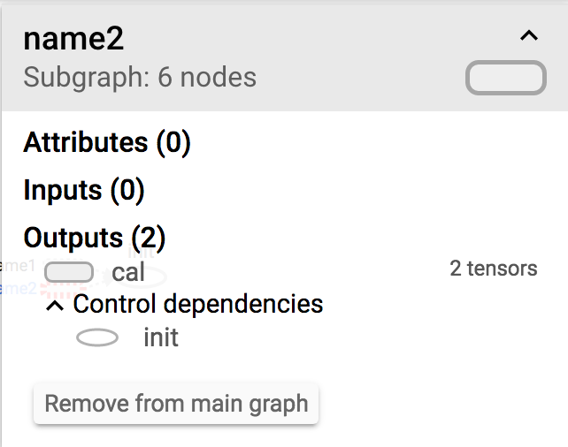

可视化学习Tensorboard
TensorBoard 涉及到的运算，通常是在训练庞大的深度神经网络中出现的复杂而又难以理解的运算。为了更方便 TensorFlow 程序的理解、调试与优化，发布了一套叫做 TensorBoard 的可视化工具。你可以用 TensorBoard 来展现你的 TensorFlow 图像，绘制图像生成的定量指标图以及附加数据。


数据序列化-events文件
TensorBoard 通过读取 TensorFlow 的事件文件来运行。TensorFlow 的事件文件包括了你会在 TensorFlow 运行中涉及到的主要数据。事件文件的生成通过在程序中指定tf.summary.FileWriter存储的目录,以及要运行的图
tf.summary.FileWriter('/tmp/summary/test/', graph=default_graph)
启动TensorBoard
要运行TensorBoard，请使用以下命令
tensorboard --logdir=path/to/log-directory
其中logdir指向其FileWriter序列化其数据的目录。如果此logdir目录包含从单独运行中包含序列化数据的子目录，则TensorBoard将可视化所有这些运行中的数据。一旦TensorBoard运行，浏览您的网页浏览器localhost:6006来查看TensorBoard
节点符号
下图给出了节点符号以及意义：

我们以下面代码来详细介绍一下整个主图的结构：
import tensorflow as tf
graph = tf.Graph()
with graph.as_default():
with tf.name_scope("name1") as scope:
a = tf.Variable([1.0,2.0],name="a")
with tf.name_scope("name2") as scope:
b = tf.Variable(tf.zeros([20]),name="b")
c = tf.Variable(tf.ones([20]),name="c")
with tf.name_scope("cal") as scope:
d = tf.concat([b,c],0)
e = tf.add(a,5)
with tf.Session(graph=graph) as sess:
tf.global_variables_initializer().run()
# merged = tf.summary.merge_all()
summary_writer = tf.summary.FileWriter('/tmp/summary/test/', graph=sess.graph)
sess.run([d,e])
我们定义了三个名称域，分别为name1,name2和cal，我们可以清晰的从图中看出。
那么所有的常数、变量或者操作都在对应的名称域中，我们可以通过点击加号或者减号来查看详细内容。在name1中，有我们定义的变量a，依赖于初始化，并且也有对应的张量的阶。同样在name2中，有变量b和c。图中实线是我们整个程序的数据流向边。在cal名称域中，有两个运算操作，数据从前面两个名称域中流入。
一般来说，如果一个程序中名称域利用的好，可以使你的主图的结构更加清晰。反之，则会显得非常混乱
节点详细信息
我们每点击一个节点在整个tensorboard右上角会出现节点的详细信息。

上面会详细列出节点的子节点数、属性以及输入输出。
添加节点汇总操作
那么tensorboard还提供了另外重要的功能，那就是追踪程序中的变量以及图片相关信息，也就是可以一直观察程序中的变量值的变化曲线首先在构建计算图的时候一个变量一个变量搜集，构建完后将这些变量合并然后在训练过程中写入到事件文件中。
收集操作
- tf.summary.scalar() 收集对于损失函数和准确率等单值变量
- tf.summary.histogram() 收集高维度的变量参数
- tf.summary.image() 收集输入的图片张量能显示图片
下面使用部分代码，说明了如何去收集变量并写入事件文件。
cross_entropy = tf.reduce_mean(tf.nn.softmax_cross_entropy_with_logits(labels=y_label, logits=y))
train_step = tf.train.GradientDescentOptimizer(0.5).minimize(cross_entropy)
correct_prediction = tf.equal(tf.argmax(y, 1), tf.argmax(y_label, 1))
accuracy = tf.reduce_mean(tf.cast(correct_prediction, tf.float32))
tf.summary.scalar("loss",cross_entropy)
tf.summary.scalar("accuracy", accuracy)
tf.summary.histogram("W",W)
然后合并所有的变量，将这些信息一起写入事件文件中
# 合并
merged = tf.summary.merge_all()
summary_writer = tf.summary.FileWriter(FLAGS.summary_dir, graph=sess.graph)
# 运行
summary = sess.run(merged)
#写入
summary_writer.add_summary(summary,i)
通过运行tensorboard，我们可以看见这样的结果,很直观的显示了变量在训练过程中的变化过程。